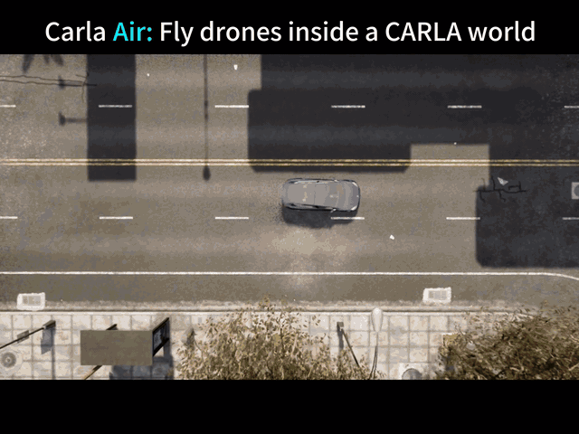
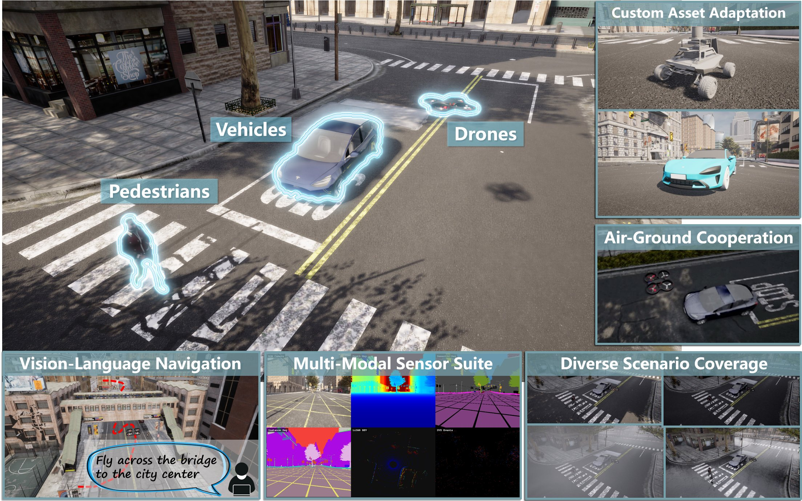
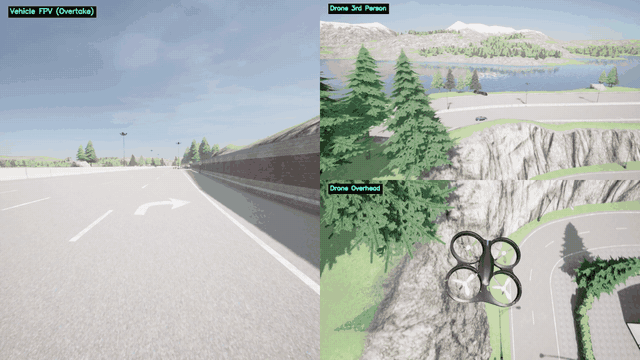
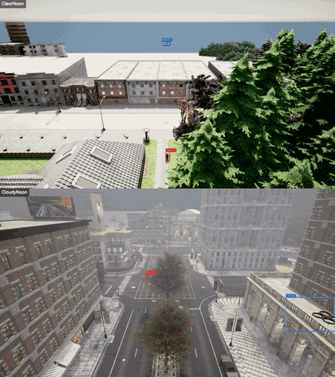
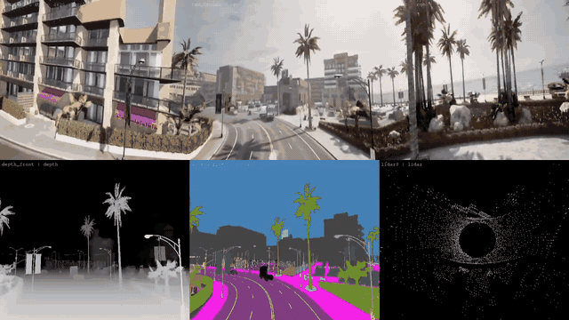
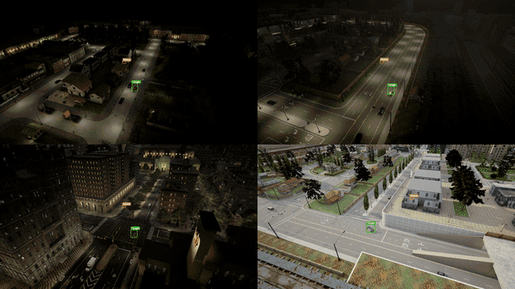
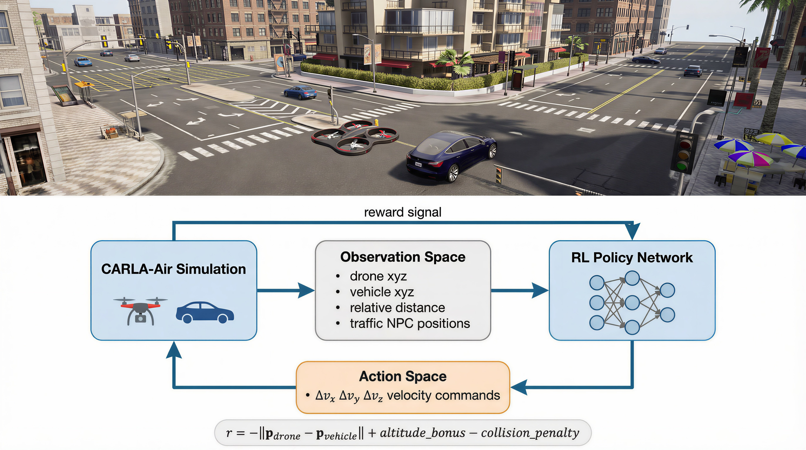
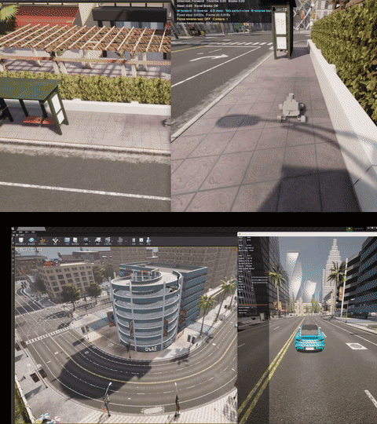
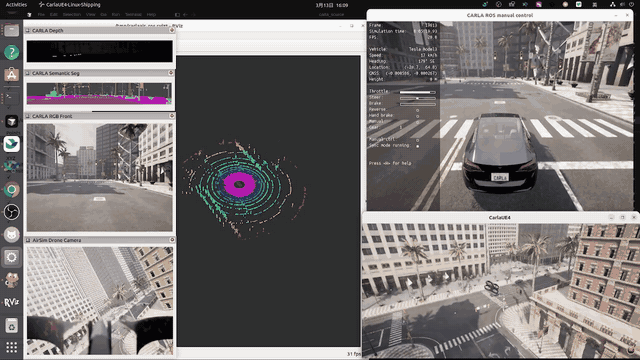

空地一体仿真#
该模块是一个开源的空地联合仿真平台。它通过在底层 C++ 将全球领先的自动驾驶仿真器（Carla）与机器人仿真器（AirSim）合并为单一的 ASimWorldGameMode，实现了真正的帧级传感器同步、统一的物理引擎，以及无缝的双 Python API 交互。

✨ 核心亮点#
| 🏗️ 单进程组合式集成 | CARLAAirGameMode 继承 Carla 并组合 AirSim。仅修改上游 2 个文件（约 35 行）。无桥接，无延迟。 |
| 🎯 绝对坐标对齐 | Carla（左手系）与 AirSim（NED）坐标系之间精确 0.0000 m 误差。 |
| 📸 多达 18 种传感器模态 | RGB、深度图、语义分割、实例分割、LiDAR、雷达、表面法线、IMU、GNSS、气压计 -- 空地传感器逐帧对齐。 |
| 🔄 零修改代码迁移 | 现有 Carla 和 AirSim Python 脚本及 ROS 2 节点可直接在 Carla-Air 上运行，无需任何代码改动。89/89 Carla API 测试全部通过。 |
| ⚡ 联合负载约 20 FPS | 中等联合配置（车辆 + 无人机 + 8 个传感器）稳定运行在 19.8 +/- 1.1 FPS。通信开销 < 0.5 ms（对比桥接联合仿真的 1--5 ms）。 |
| 🛡️ 3 小时稳定性验证 | 357 次生成/销毁循环，零崩溃，零内存累积（R² = 0.11）。 |
| 🚁 内置 FPS 无人机控制 | 在视口中使用 WASD + 鼠标直接驾驶无人机 -- 无需编写 Python 脚本。 |
| 🚦 逼真城市交通 | 规则驱动的交通流、具有社会行为的行人、13 张城市地图。 |
| 🧩 可扩展资产导入管线 | 支持导入自定义机器人平台、无人机配置、车辆模型和环境地图。 |

🏆 平台对比#
CARLA-Air 与 14 个现有仿真平台的全面对比（基于技术报告表 1）。
| 类别 | 平台 | 城市交通 | 行人 | 无人机飞行 | 单进程 | 共享渲染器 | 原生 API | 联合传感器 | 预编译包 | 测试套件 | 自定义资产 | 开源 |
|---|---|---|---|---|---|---|---|---|---|---|---|---|
| 自动驾驶 | CARLA | ✓ | ✓ | ✗ | ✓ | ✓ | ✓ | ✗ | ✓ | ✗ | ✓ | ✓ |
| LGSVL | ✓ | ✓ | ✗ | ✓ | ✓ | ✓ | ✗ | ✓ | ✗ | ~ | ✓ | |
| SUMO | ✓ | ✓ | ✗ | ✓ | ✗ | ✓ | ✗ | ✓ | ✗ | ✗ | ✓ | |
| MetaDrive | ✓ | ~ | ✗ | ✓ | ~ | ✓ | ✗ | ✗ | ✗ | ✗ | ✓ | |
| VISTA | ~ | ✗ | ✗ | ✓ | ~ | ✓ | ✗ | ✗ | ✗ | ✗ | ✓ | |
| 空中 / 无人机 | AirSim | ✗ | ✗ | ✓ | ✓ | ✓ | ✓ | ✗ | ✓ | ✗ | ✓ | ✓ |
| Flightmare | ✗ | ✗ | ✓ | ✓ | ✓ | ✓ | ✗ | ✗ | ✗ | ~ | ✓ | |
| FlightGoggles | ✗ | ✗ | ✓ | ✓ | ✓ | ✓ | ✗ | ✗ | ✗ | ~ | ✓ | |
| Gazebo/RotorS | ~ | ~ | ✓ | ✓ | ~ | ✓ | ✗ | ✓ | ✗ | ✓ | ✓ | |
| OmniDrones | ✗ | ✗ | ✓ | ✓ | ✓ | ✓ | ✗ | ✗ | ✗ | ✓ | ✓ | |
| gym-pybullet-drones | ✗ | ✗ | ✓ | ✓ | ~ | ✓ | ✗ | ✗ | ✗ | ~ | ✓ | |
| 联合 / 协同仿真 | TranSimHub | ✓ | ✓ | ✓ | ✗ | ✗ | ✗ | ~ | — | ✗ | ✗ | ✓ |
| CARLA+SUMO | ✓ | ✓ | ✗ | ✗ | ✗ | ~ | ✗ | — | ✗ | ✗ | ✓ | |
| AirSim+Gazebo | ~ | ~ | ✓ | ✗ | ✗ | ~ | ~ | — | ✗ | ~ | ✓ | |
| 具身 AI 与 RL | Isaac Lab | ✗ | ✗ | ~ | ✓ | ✓ | ✓ | ✗ | ✗ | ✓ | ✓ | ✓ |
| Isaac Gym | ✗ | ✗ | ~ | ✓ | ✓ | ✓ | ✗ | ✗ | ✗ | ✗ | ✓ | |
| Habitat | ✗ | ~ | ✗ | ✓ | ✓ | ✓ | ✗ | ✗ | ✗ | ✗ | ✓ | |
| SAPIEN | ✗ | ✗ | ✗ | ✓ | ✓ | ✓ | ✗ | ✗ | ✗ | ~ | ✓ | |
| RoboSuite | ✗ | ✗ | ✗ | ✓ | ✓ | ✓ | ✗ | ✗ | ✗ | ~ | ✓ | |
| 本项目 | CARLA-Air | ✓ | ✓† | ✓ | ✓ | ✓ | ✓ | ✓ | ✓ | ✓ | ✓ | ✓ |
✓ = 支持；~ = 部分或受限支持；✗ = 不支持；— = 不适用。
† 行人 AI 继承自 CARLA，功能完整；联合场景下高密度 Actor 的行为是当前工程优化目标。
🎮 快速开始#
选项 A：使用预编译版本（推荐）#
```bash
1. 下载并解压 CarlaAir-v0.1.7#
tar xzf CarlaAir-v0.1.7.tar.gz cd CarlaAir-v0.1.7
2. 一键环境配置（仅首次需要）#
bash env_setup/setup_env.sh # 创建 conda 环境，安装依赖，部署 carla 模块 conda activate carlaAir bash env_setup/test_env.sh # 验证环境：应全部显示 PASS
3. 启动仿真器（自动生成交通流）#
./CarlaAir.sh Town10HD
4. 运行展示脚本！（另开一个终端）#
conda activate carlaAir python3 examples/quick_start_showcase.py ```
你将看到： 一辆特斯拉在城市中自动巡航，无人机从空中追踪。4 分屏同时展示 RGB · 深度图 · 语义分割 · LiDAR 鸟瞰 — 全部实时同步。天气自动轮换。按 WASD 随时接管驾驶！
选项 B：从源码编译#
如果您需要修改底层 C++ 代码，请参考 源码编译指南，了解如何使用 UE4.26 编译 CarlaAir。
🐍 一个脚本，两个世界#
两套 API 共享同一个仿真世界 — 无桥接、无同步烦恼。
```python import carla, airsim
carla_client = carla.Client("localhost", 2000) air_client = airsim.MultirotorClient(port=41451) world = carla_client.get_world()
一次天气调用，影响所有传感器 — 地面和空中#
world.set_weather(carla.WeatherParameters.HardRainSunset)
生成一辆汽车，自动驾驶#
vehicle = world.spawn_actor(vehicle_bp, spawn_point) vehicle.set_autopilot(True)
无人机起飞 — 同一个世界，同一场雨，同一套物理#
air_client.takeoffAsync().join() air_client.moveToPositionAsync(80, 30, -25, 5) ```
6 个演示脚本 — 逐个试试：
bash
python3 examples/quick_start_showcase.py # 🎬 4分屏传感器 + 无人机追踪 + 天气轮换
python3 examples/drive_vehicle.py # 🚗 WASD 驾驶特斯拉
python3 examples/walk_pedestrian.py # 🚶 鼠标+键盘 城市漫步
python3 examples/switch_maps.py # 🗺️ 自动飞越全部 13 张地图
python3 examples/sensor_gallery.py # 📸 单车 6 传感器网格展示
python3 examples/air_ground_sync.py # 🔄 车+无人机分屏：同一场雨，同一世界
录制工具 — 录制车辆、无人机、行人轨迹，然后用导演相机回放：
bash
python3 examples/recording/record_vehicle.py # 🚗 键盘驾驶并录制车辆轨迹
python3 examples/recording/record_drone.py # 🚁 飞行并录制无人机轨迹（零侵入）
python3 examples/recording/record_walker.py # 🚶 行走并录制行人轨迹
python3 examples/recording/demo_director.py \ # 🎬 多轨迹回放 + 自由相机 + MP4 录制
trajectories/vehicle_*.json trajectories/drone_*.json
🔬 研究方向与工作流#
CARLA-Air 旨在支持空地一体具身智能的四大研究方向：
- 空地协同 -- 异构空地智能体在共享城市环境中协作。
- 具身导航（VLN/VLA） -- 视觉语言驱动的导航与动作执行，基于高保真城市场景。
- 多模态感知与数据集 -- 多样条件下的空地同步传感器数据采集。
- 强化学习策略训练 -- 空地联合交互的闭环强化学习训练。
平台提供五个覆盖上述方向的参考工作流：
| 工作流 | 研究方向 | 关键成果 | |
|---|---|---|---|
| W1 | 空地协同 | 空地协同 | 实时跨域协调控制 |
| W2 | VLN/VLA 任务 | 具身导航 | 跨视角 VLN 数据管线 |
| W3 | 多模态数据集采集 | 感知与数据集 | 12 路同步，1-tick 对齐 |
| W4 | 跨视角感知 | 感知与数据集 | 14/14 天气预设验证通过 |
| W5 | RL 训练环境 | 强化学习策略训练 | 357 次重置循环，0 次崩溃 |
W1：空地协同

W2：VLN/VLA (Vision Language-driven Navigation/Action) 数据生成

W3：多模态数据集采集

W4：跨视角感知

W5：RL 训练环境

自定义资产导入

ROS 2 支持：63 个 Topic 覆盖双仿真后端

⌨️ 飞行控制说明#
仿真器运行时，点击窗口内部捕获鼠标：
| 按键 | 功能 |
|---|---|
W / A / S / D |
前进 / 左移 / 后退 / 右移 |
Space / Shift |
上升 / 下降 |
Mouse |
偏航转向 |
Scroll |
调节速度 |
N |
切换天气 |
P |
碰撞模式切换 |
H |
帮助菜单 |
Tab |
释放 / 捕获鼠标 |
1 / 2 / 3 |
传感器画面 |
📚 文档与教程#
我们提供了 6 个精选 Python 示例，展示核心空地协同能力：
| 示例 | 说明 |
|---|---|
quick_start_showcase.py |
4 分屏传感器 + 无人机追踪 + 天气轮换 |
drive_vehicle.py |
WASD 键盘驾驶特斯拉 |
walk_pedestrian.py |
鼠标视角城市漫步 |
switch_maps.py |
自动飞越全部 13 张地图 |
sensor_gallery.py |
单车 6 传感器网格展示 |
air_ground_sync.py |
车 + 无人机分屏：同一场雨，同一世界 |
分步教程（8 个脚本位于 CarlaAir_Release/guide/examples/，适合初学者）：
| # | 教程 | 学习内容 |
|---|---|---|
| 01 | 01_hello_world.py |
连接双 API，验证环境配置 |
| 02 | 02_weather_control.py |
实时更改天气参数 |
| 03 | 03_spawn_traffic.py |
生成车辆与行人 |
| 04 | 04_sensor_capture.py |
挂载与读取传感器 |
| 05 | 05_drone_takeoff.py |
基础无人机飞行指令 |
| 06 | 06_drone_sensors.py |
空中传感器配置 |
| 07 | 07_combined_demo.py |
空地联合操作 |
| 08 | 08_full_showcase.py |
全平台能力展示 |
完整文档：
开发
📜 许可证与致谢#
该项目是站在巨人的肩膀上。我们诚挚感谢以下开源项目的开发者：
-
Carla Simulator (MIT License)
-
Microsoft AirSim (MIT License)
Carla 相关的资产遵循 CC-BY 许可证。 其他相关资产（包括湖南工商大学大学场景、长沙中电软件园场景）和代码基于 MIT 许可证 开源。